Act I: The Assessment Crisis & Architectural Vision
Gemini AI Classroom Assistant & Multimodal Invigilator
A Privacy-Preserving, Sub-$0.02 Edge-First Architecture for Computing & Engineering Education
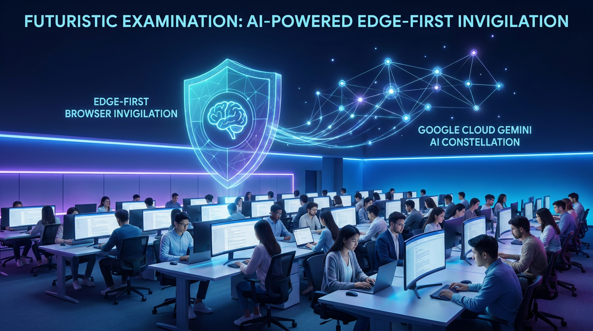
Speaker Biography
About the Speaker: Cyrus Wong (黃俊彥)
Senior Lecturer, Hong Kong Institute of Information Technology (HKIIT), VTC Hong Kong
Act I: The Assessment Crisis
The Assessment Trilemma in Technology Education
Why Traditional Invigilation and Commercial Surveillance Fail at Scale
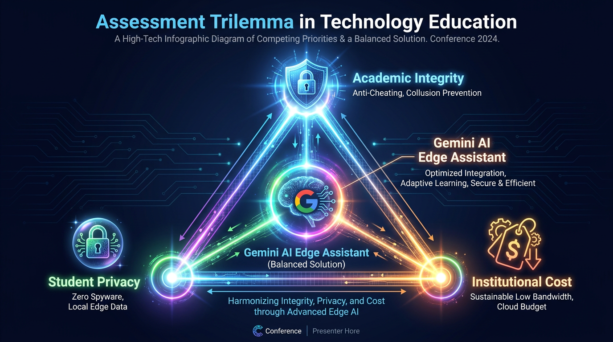
Act I: Paradigm Shift
Rethinking Proctoring: Spyware vs. Edge-AI Assistant
Moving from Punitive Black-Box Surveillance to Transparent Human-in-the-Loop Pedagogy
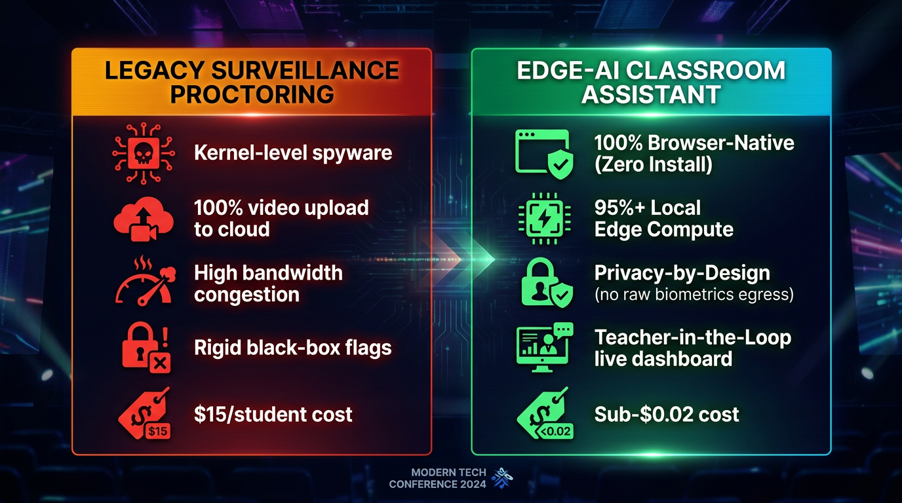
Act II: Cloud & Edge Systems Architecture
High-Level Systems Architecture: 4-Tier Hybrid Flow
Balancing Extreme Low Bandwidth at the Edge with Hyperscale Cloud Reasoning
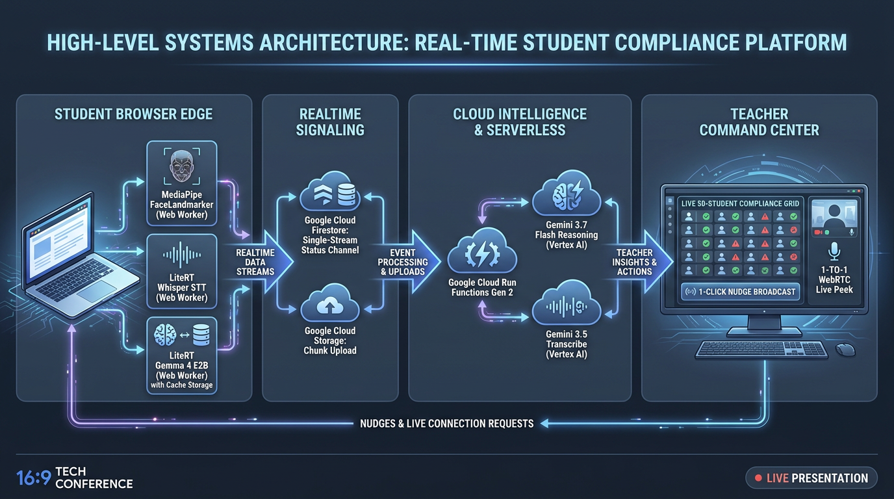
Act II: Cloud Architecture
Google Cloud Run & Cloud Functions Gen 2 Topology
7 Domain-Driven Isolated Micro-Codebases Deployed to asia-east2 (Hong Kong)
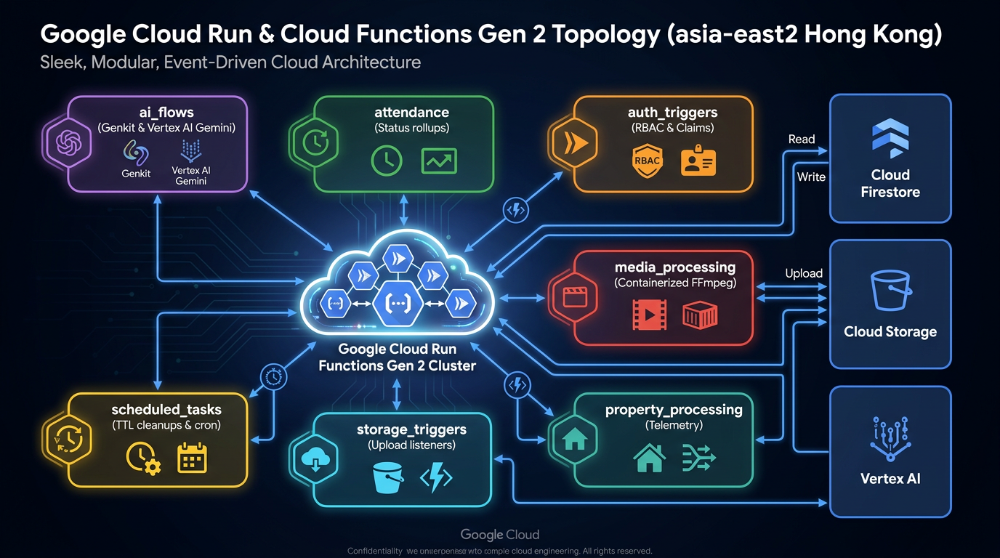
Act II: Cloud Architecture
Firestore Single-Stream Channel: 98% Read Reduction
Avoiding Multi-Document Listener Storms in High-Density Computer Labs
web-app/src/hooks/useMonitorClass.js
Teacher Single-Stream Listener
// Single document listener for entire class of 50 students
const statusDocRef = doc(db, 'classes', classId, 'status', 'current');
const unsubscribe = onSnapshot(statusDocRef, (snapshot) => {
if (!snapshot.exists()) return;
// Atomic map of all students: UID -> { status, gaze, lastScreen }
const { activeStudents, lastUpdated } = snapshot.data();
updateStudentGrid(activeStudents);
});
🚫
The Naive Anti-Pattern: 50 students × 50 listeners = 2,500 Firestore reads every 5 seconds. Rapid quota exhaustion and UI lag.
⚡
Single-Stream Aggregator: Background Cloud Function batches student heartbeats into a single atomic payload. Teacher dashboard consumes 1 read per cycle.
🎯
Composite Index Optimization: Multi-field queries (`classId ASC, timestamp DESC`) defined declaratively in `firestore.indexes.json`.
Act III: AI Engineering
Google Gemini 3 Model Suite & Routing Strategy
Matching Model Capabilities, Latency Profiles, and Cost Parameters to Invigilation Tasks
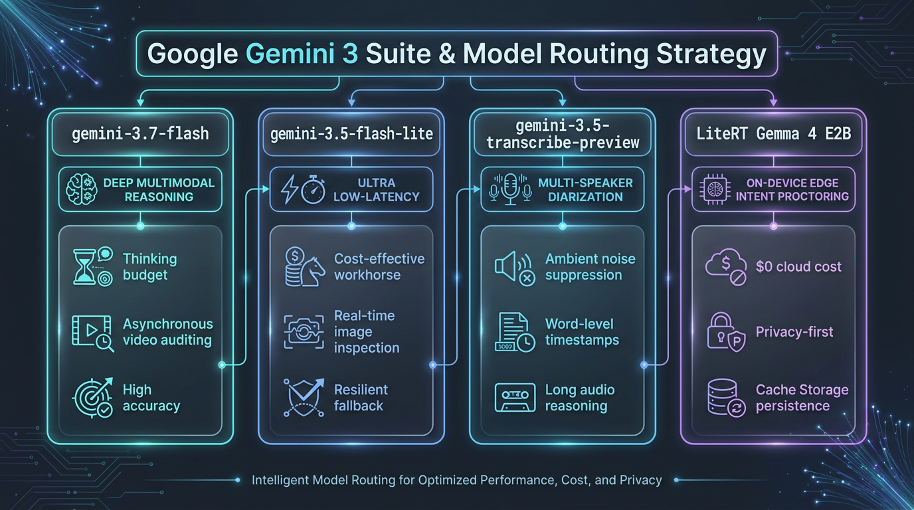
Act III: AI Engineering
Google Genkit Resilience & Autonomous Tool Calling
Deterministic Schema Validation, Exponential Backoff, and Self-Healing Failover
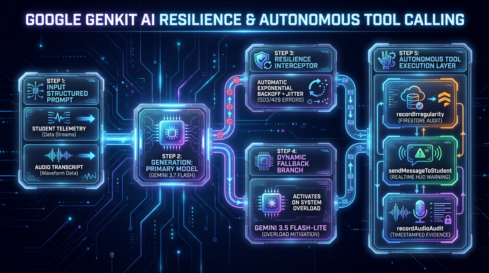
Act III: AI Engineering
Production Prompt Engineering: Strict JSON & Tool Schemas
Eliminating Hallucinations and Guaranteeing Deterministic Database Writes
admin/prompts/audios/AI Speech Intent Proctor (Gemma).md
Edge Gemma Prompt
You are an AI exam proctor. Classify a student's
spoken transcript by meaning and context.
Use exactly one category:
- COLLUSION_EXAM: discussing exam answers/options
- EXTERNAL_AI_ASSIST: querying Siri, Alexa, phone AI
- UNAUTHORIZED_TALK: conversation with peers
- LEGITIMATE_INQUIRY: teacher/proctor technical question
- BENIGN: self-talk, reading code, ambient noise
Respond with ONLY one JSON object:
{"isViolation":boolean,"category":"COLLUSION_EXAM|...",
"severity":"critical|high|medium|low|none",
"confidence":0.95,"evidence":"quote","rationale":"..."}
functions/ai_flows/prompts.js (Mustache Interpolation)
Cloud Genkit Tool Prompt
You are an expert AI Classroom Invigilator.
Context: Class {{classId}}, Student {{studentEmail}}
Audio Transcript: """{{transcript}}"""
Instructions:
1. Analyze transcript for unauthorized collusion or whisper.
2. If collaboration is detected:
- Call tool `recordAudioIrregularity` with:
{ title, message, riskLevel, speakerCount, snippet }
3. Call tool `recordAudioAudit` with:
{ verdict, speakerCount, summary, transcript }
Act IV: Edge-First AI Engineering
On-Device Vision AI: 468-Point Mesh & Iris Geometry
MediaPipe Landmarker Running in Background Web Workers (Zero UI Thread Jank)
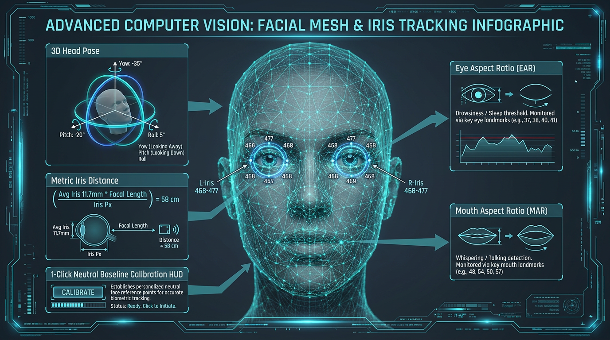
Act IV: Edge-First AI Engineering
Code Deep Dive: Zero-Jank Vision Loop & Metric Projection
Hardware-Synchronized requestVideoFrameCallback + Zero-Copy ImageBitmap Transfer
web-app/src/hooks/useFaceMonitor.js
requestVideoFrameCallback
// Hardware-synchronized frame capture (no UI stutter)
const processFrame = async (now, metadata) => {
if (!workerRef.current || !isDetecting) return;
// Zero-copy Transferable ImageBitmap
const bitmap = await createImageBitmap(videoEl);
workerRef.current.postMessage(
{ type: 'DETECT_FRAME', bitmap, timestamp: now },
[bitmap] // Transfers ownership instantly
);
videoEl.requestVideoFrameCallback(processFrame);
};
web-app/src/workers/faceLandmarker.worker.js
Iris Depth Calculation
// Metric distance calculation via pinhole camera model
function calculateIrisDistanceCm(landmarks, frameWidth) {
const leftIris = landmarks[468];
const rightIris = landmarks[473];
const irisPixelDist = Math.hypot(
(rightIris.x - leftIris.x) * frameWidth,
(rightIris.y - leftIris.y) * frameWidth
);
// Avg human iris = 11.7mm; focal length calibrated
const distanceCm = (AVG_IRIS_MM * FOCAL_PX) / irisPixelDist;
return Math.round(distanceCm);
}
Act IV: Edge-First AI Engineering
Browser-Native Speech AI: LiteRT Whisper & Gemma 4 E2B
Bilingual Cantonese/English Code-Switching Transcribed and Audited Locally at $0 Cost
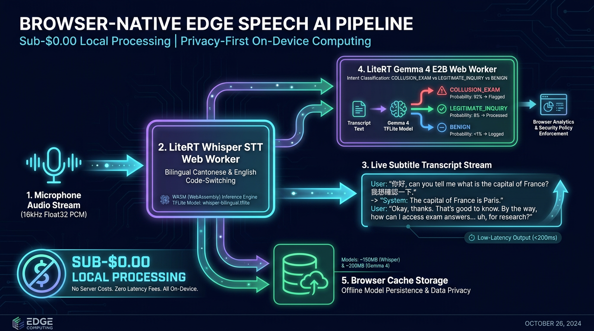
Act IV: Audio Intelligence
Cloud Audio Diarization & RMS Silence Suppression
Dropping >80% Silent Audio Locally; Synchronized Waveform Seek via Gemini 3.5 Transcribe
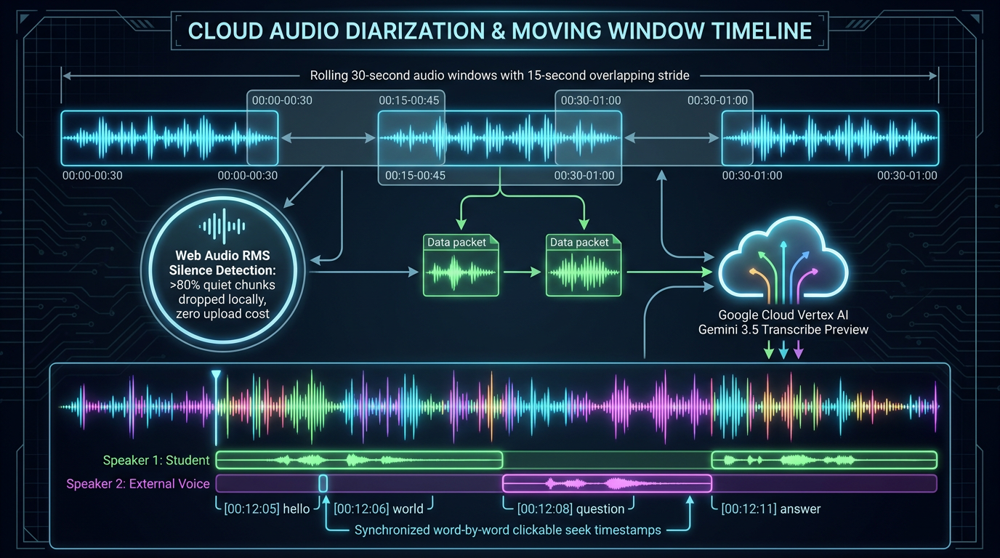
Act V: Real-Time Media & Classroom Ergonomics
Dual Real-Time WebRTC Media Streaming Topologies
1-to-1 P2P Live Peek (Zero Cloud Storage Transit) & 1-to-Many Teacher Screen Broadcasting
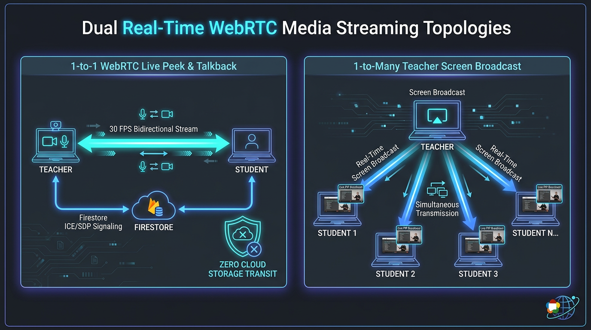
Act V: Classroom Ergonomics
Teacher Command Center: Solving Cognitive Overload
Zero-Space Compliance Filtering, 1-Click Targeted Nudge ('N'), and Offline State Caching
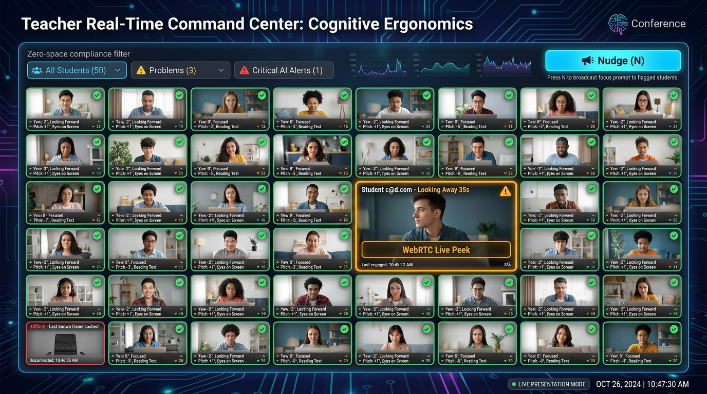
Act V: Cloud Architecture & Compliance
Cloud Media Lifecycle & Containerized FFmpeg Pipeline
Automatic Screenshot-to-MP4 Compilation & Declarative Firestore TTL Data Purging
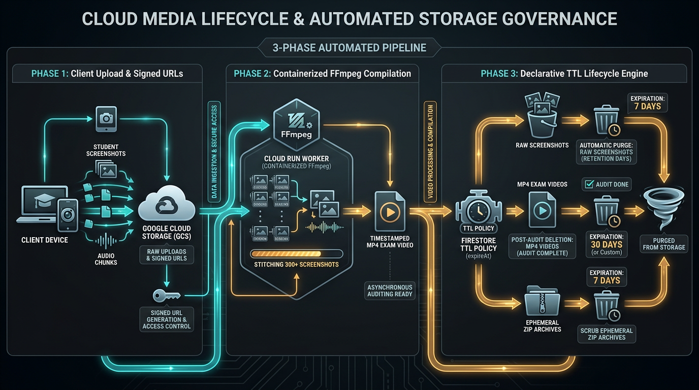
Act V: Institutional Economics
Green AI & Cloud FinOps: Institutional Cost Sustainability
Achieving a 99.8% Cost Reduction: $0.85 per Exam vs. $750.00 Commercial SaaS
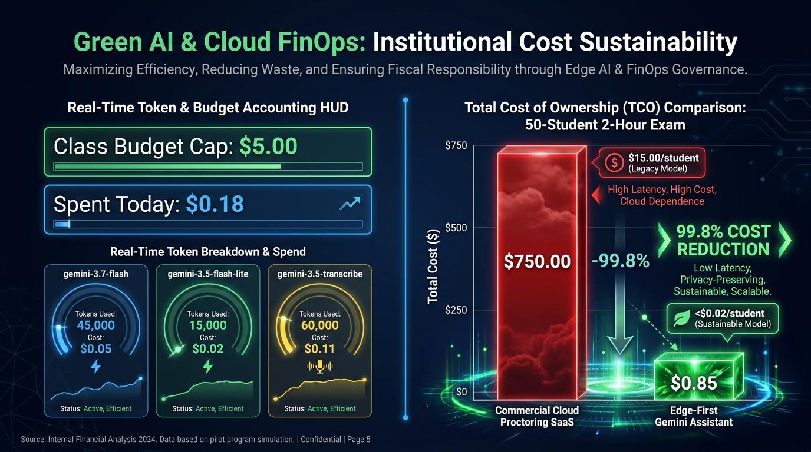
Act V: Academic Governance
Academic Integrity Incident Dossier Pipeline
1-Click Automated Export to Verifiable Microsoft Word (.docx) and CSV Audit Logs
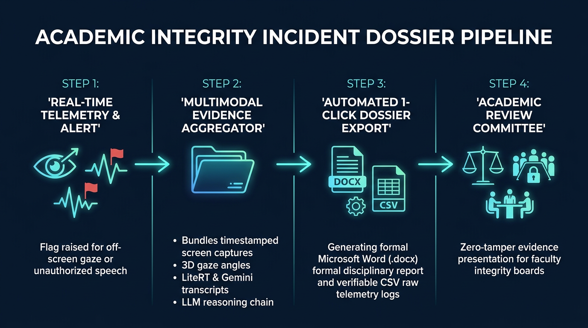
Act V: DevSecOps & Software Reliability
Engineering Reliability: Terraform IaC & Build Guardrails
1-Command Cloud Deployment, 408 Automated Unit/Integration Tests, and Build-Time Assertions
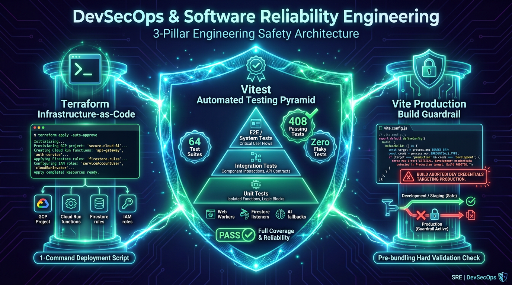
Act VI: Live Demonstration & Verification
Live System Demonstration: 5-Stage Verification Flow
Verifying End-to-End Edge-Cloud Pipeline in a Real Classroom Setting
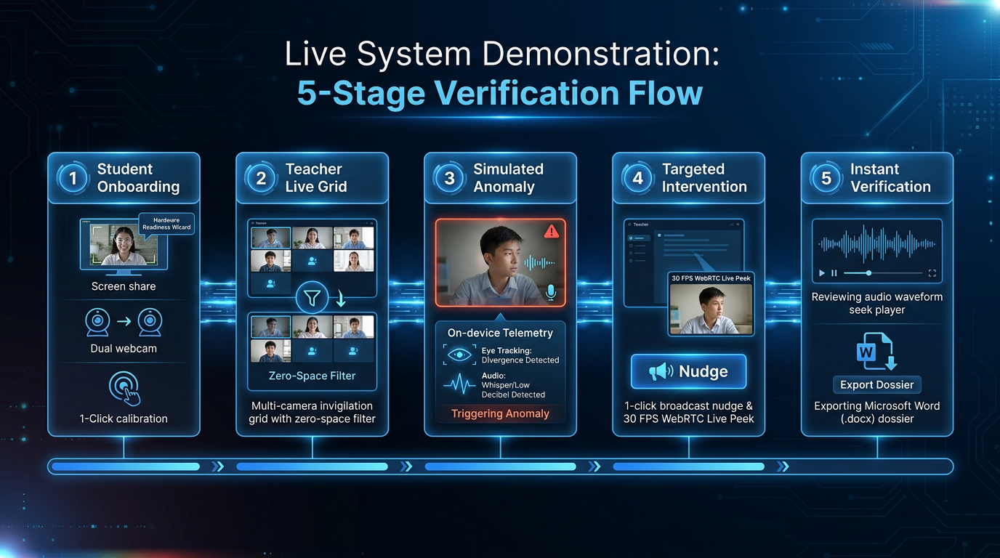
Act VI: Conclusion & International Collaboration
Empowering Technology Educators with Edge-First AI
Open-Source Repository, Live Deployment, and Academic Collaboration
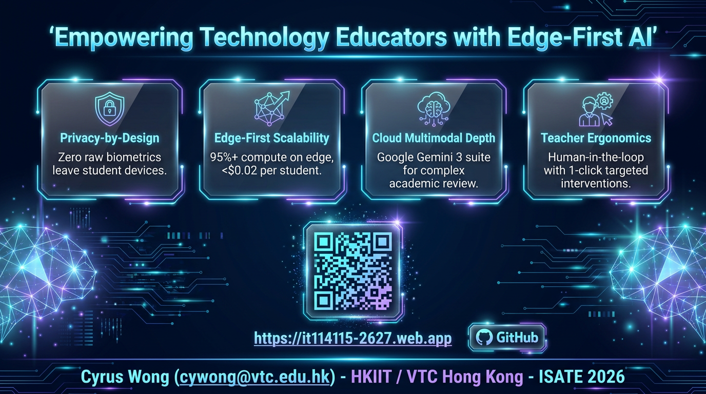